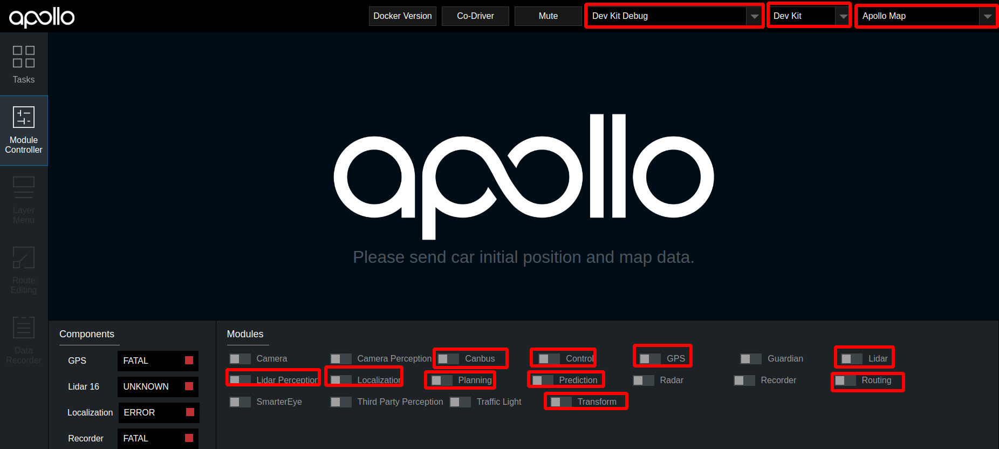
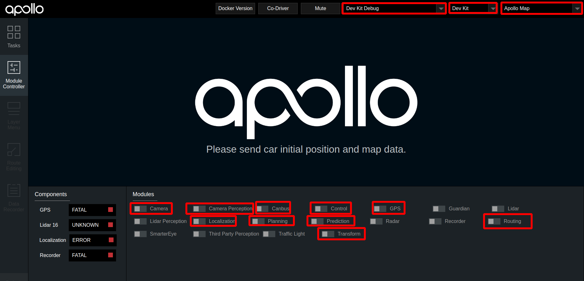

封闭园区自动驾驶搭建–规划适配
概览
该用户手册旨在帮助用户完成规划模块的配置和开环验证。规划模块需要上游的感知数据，目前有Lidar感知和Camera感知两种方案，用户可以选择其中任意一种感知方案。
前提条件
配置文件的修改
对/apollo/modules/planning/conf/planning.conf和/apollo/modules/planning/conf/planning_config.pb.txt两个配置文件进行以下修改：
修改文件名称 |
修改内容 |
对应的gflag参数 |
单位 |
作用 |
|---|---|---|---|---|
|
修改 |
比如1.5 |
m/s |
默认巡航速度 |
|
修改 |
比如1.5 |
m/s |
车planning最大速度 |
|
添加 |
比如0.5 |
m/s |
车planning最小速度 |
|
添加 |
比如1.5 |
m/s |
车最大速度 |
|
添加 |
比如10 |
m |
障碍物最大停止距离 |
|
添加 |
比如5 |
m |
障碍物最小停止距离 |
|
添加 |
比如1.0 |
m |
认为车已经到达目的地时，车与目的地距离 |
|
添加 |
比如0.3 |
m |
车与障碍物的默认碰撞距离 |
|
添加 |
false |
使起步停车场景失效 |
|
|
修改 |
比如15.0 |
s |
planning规划多长时间的路线 |
|
修改 |
比如1.0 |
m/s^2 |
车辆最大加速度 |
|
修改 |
比如0.5 |
m/s |
planning时车的最低速度 |
|
修改 |
比如1.5 |
m/s |
车前进的最大速度 |
|
修改 |
比如1.0 |
m/s^2 |
车前进的最大加速度 |
注意：这些配置重新启动planning模块即可生效。为了安全起见，车planning速度一定要设置得比较小，建议按照上面的给出的值来设置相应的配置参数。
启动流程
把车辆开到户外，手动控制车辆，在感知有障碍物信息显示的情况下添加routing点并查看是否有planning轨迹线信息。
1. 拍下车辆尾部的急停开关
本文档目的是进行规划的适配，并完规划模块的开环验证，不需要车辆行驶，为了安全起见，将车开到室外调试场后，请全程确保急停开关处于按下状态
2. 启动感知
如果用户使用Lidar感知方案，请参照基于激光雷达的封闭园区自动驾驶搭建–感知适配启动Lidar感知
如果用户使用Camera感知方案，请参照基于摄像头的封闭园区自动驾驶搭建–感知适配启动Camera感知
3. 启动 Planning、Prediction、Routing、Control模块
确保感知模块启动成功后，在Module Controller标签页启动Planning、Prediction、Routing、Control模块。
对于Lidar感知方案，DreamView上显示启动的模块如下图所示： 
对于Camera感知方案，DreamView上显示启动的模块如下图所示： 
在Routing Editor标签中点击Add Point of Interest按钮添加一个point, 然后选择Send Routing Request按钮发送添加的routing点

4. 验证Planning、Prediction、Routing、Control模块是否启动成功
从DreamView中查看会出现一个蓝色的线 以及一个红色的stop标志。如下图所示：
 在车前方存在人或者自行车（车上有人）时，在task标签页查看planning轨迹线，正常情况下planning会重新规划轨迹，如下图所示：
在车前方存在人或者自行车（车上有人）时，在task标签页查看planning轨迹线，正常情况下planning会重新规划轨迹，如下图所示：

在docker环境中输入命令cyber_monitor并查看planning channel信息：

如果出现上图所示轨迹线和topic信息，表示规划模块适配和开环测试通过，否则继续查看log信息进行调试。
NEXT
现在，您已经完成规划适配，根据您适配的是Lidar感知方案还是Camera感知方案，接下来可以开始基于激光雷达的封闭园区自动驾驶搭建–自动驾驶演示或基于摄像头的封闭园区自动驾驶搭建–自动驾驶演示